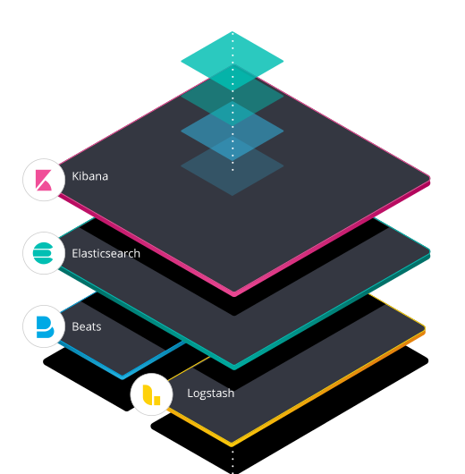
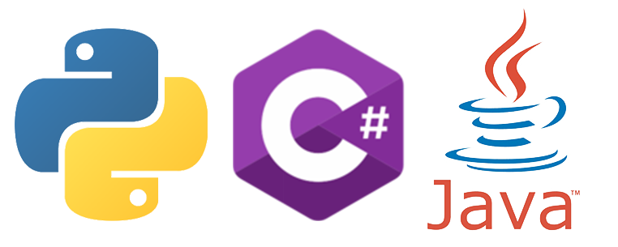
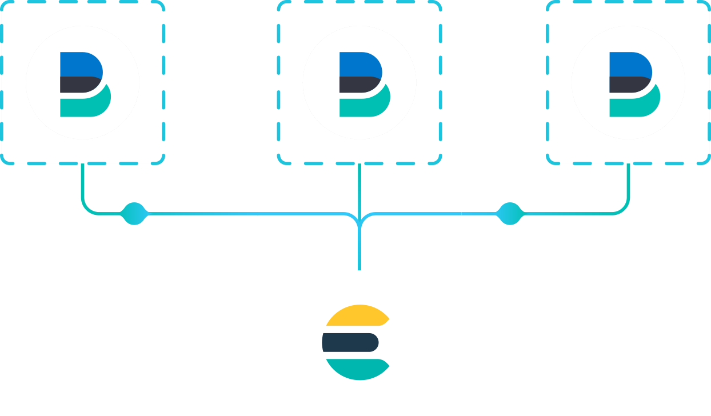

Recoleccion de data para ElasticSearch
Beats, Logstash, Python API
Created by Juan José Montoya Powered by reveal.js
Arquitectura ElasticSearch

Beats

Beats es la plataforma para transportadores de datos de un solo propósito. Envían datos de cientos o miles de máquinas y sistemas a Logstash o Elasticsearch.
Logstash
Logstash es una fuente de procesamiento de datos server-side de código abierto que ingiere datos de una multitud de fuentes simultáneamente, la transforma y luego la envía a un destino predilecto.
APIs
Clientes oficiales de bajo nivel para Elasticsearch. Su objetivo es proporcionar un terreno común para todos los códigos relacionados con Elasticsearch
Beats
ElasticSearch Beat Family
 Filebeat -
Metricbeat -
Winlogbeat -
Auditbeat -
Heartbeat -
Functionbeat
Filebeat -
Metricbeat -
Winlogbeat -
Auditbeat -
Heartbeat -
Functionbeat
Componente Open Source
Mas de 80 beats de la comunidad publicados
Plantilla para crear Beats personalizados
Arquitectura de los Beats
Beats Central Management
Beats central management proporciona una manera de definir y administrar configuraciones en una ubicación central en Kibana e implementar rápidamente los cambios de configuración en todos los Beats que se ejecutan en su empresa.